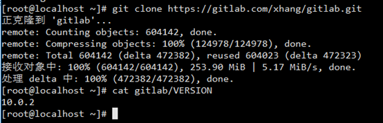
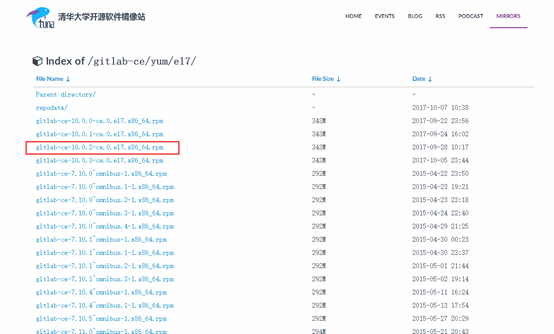
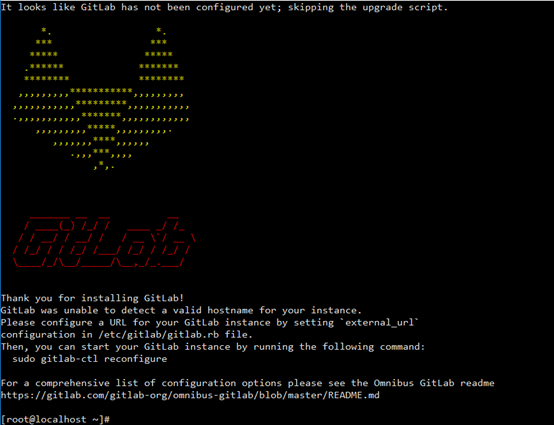
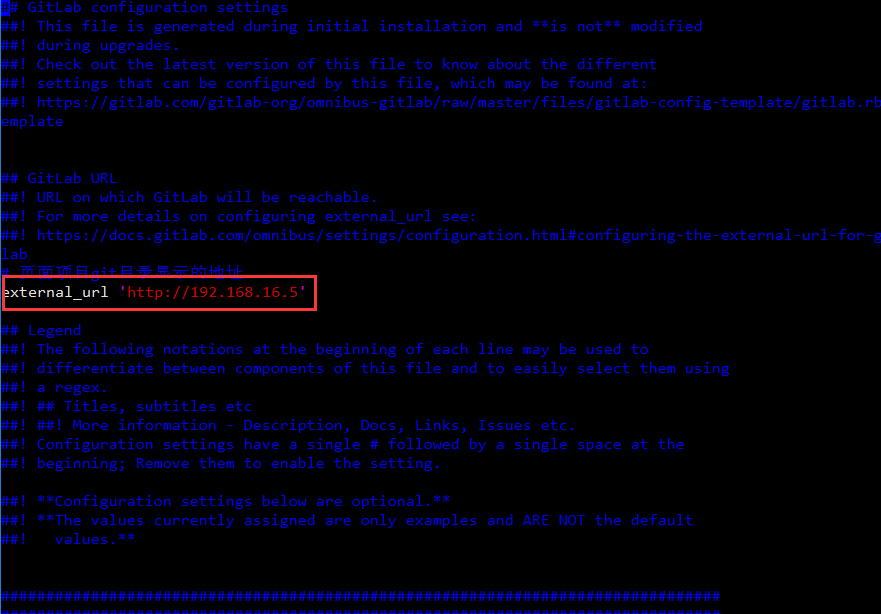
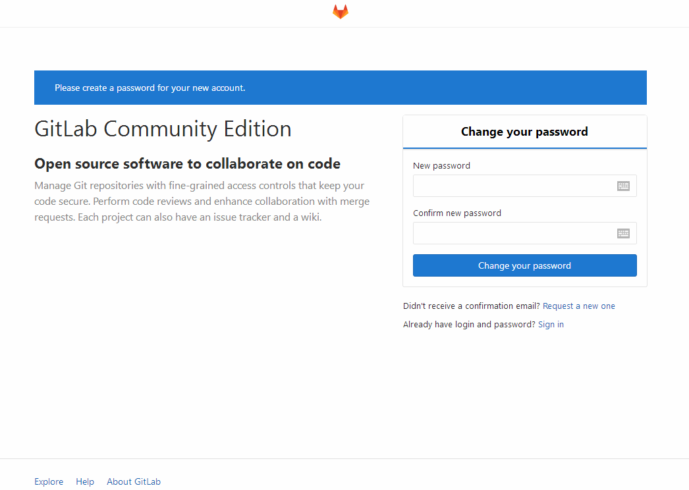
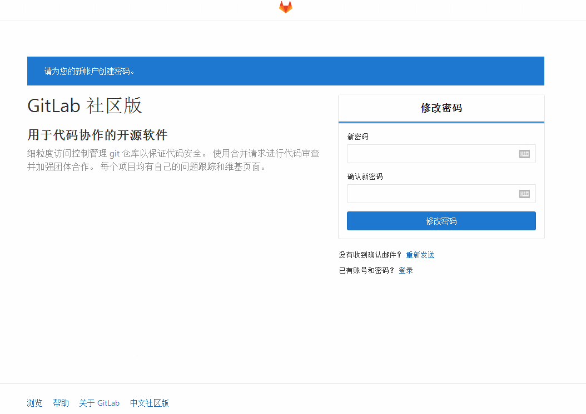
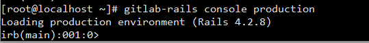

centos 7 部署 汉化版 gitlab
===============================================
2018/6/5_第7次修改 ccb_warlock
更新说明：
2018/6/5：硬件要求资料修改为gitlab官方的链接
2017/11/12：五中增加管理员账号的内容
2017/11/8：修复3.6中命令错误的问题；
2017/10/20：3.4中增加“途径2：从官方获取RPM包后上传到/root目录下”的内容；4.5中增加安装patch的命令；2.2中增加git clone老版本的命令；
2017/10/18：在“环境准备”中增加硬件环境的描述；
2017/10/9：增加3.5的内容；
===============================================
作为公司层面使用gitlab，进行维护时一定要考虑升级、备份、迁移/恢复的事情，代码安全是研发部门的重心之一，故我也整理了下面的内容供维护人员参考。
升级：http://www.cnblogs.com/straycats/p/7707359.html
本地备份：http://www.cnblogs.com/straycats/p/7671204.html
远程备份：http://www.cnblogs.com/straycats/p/7672692.html
迁移/恢复：http://www.cnblogs.com/straycats/p/7702271.html
gitlab接触了一段时间，觉得是一个很不错的开源产品（gitlab的社区版），值得我整理一篇部署教程作为记录。
安装全程选择的用户为root。
一、环境准备
操作系统：centos7（minimal，www.centos.org下载的包是CentOS-7-x86_64-Minimal-1708.iso）
CPU：2核
内存：6G
说明：硬件根据我查到的资料(https://docs.gitlab.com/ce/install/requirements.html)，结合使用人数的考虑，故选择了2核6G的配置，实际配置时需要根据gitlab使用人数的负载来决定硬件配置。
1.1 更换阿里yum（个人习惯）
步骤：
1）下载wget
yum install -y wget
2）备份默认的yum
mv /etc/yum.repos.d /etc/yum.repos.d.backup
3）设置新的yum目录
mkdir /etc/yum.repos.d
4）下载阿里yum配置到该目录中
wget -O /etc/yum.repos.d/CentOS-Base.repo http://mirrors.aliyun.com/repo/Centos-7.repo
5）重建缓存
yum clean all
yum makecache
6）升级所有包（改变软件设置和系统设置，系统版本内核都升级，故需要几分钟耐心等待）
yum update -y
1.2 安装vim（个人习惯）
yum install -y vim
二、获取gitlab汉化包（要部署非汉化版，可以跳过这一块内容）
说明：gitlab中文社区版的项目，v7-v8.8是由Larry Li发起的“GitLab 中文社区版项目”（https://gitlab.com/larryli/gitlab），从 v8.9 之后，@xhang 开始继续该汉化项目（https://gitlab.com/xhang/gitlab）。
2.1 安装git
yum install -y git
2.2 克隆获取汉化版本库
下载最新的汉化包
git clone https://gitlab.com/xhang/gitlab.git
如果是要下载老版本的汉化包，需要加上老版本的分支，比如今天已经是10.0.4，我依旧想下载10.0.2，可以运行下面的语句
git clone https://gitlab.com/xhang/gitlab.git -b v10.0.2-zh
2.3 查看该汉化补丁的版本
cat gitlab/VERSION
我安装的时候正好是国庆，最新的版本才刚出，所以汉化版为10.0.2，故我选择原版也安装10.0.2。

三、部署社区版gitlab
3.1 安装gitlab的依赖项
yum install -y curl openssh-server openssh-clients postfix cronie policycoreutils-python
// 10.x以后开始依赖policycoreutils-python，我之前在使用9.x时还没有依赖该项。
3.2 启动postfix，并设置为开机启动
systemctl start postfix
systemctl enable postfix
3.3 设置防火墙
firewall-cmd --add-service=http --permanent
firewall-cmd --reload
3.4 获取gitlab的rpm包
途径1：通过清华开源镜像站
查看清华开源镜像站，有我需要的10.0.2的rpm包。

获取rpm包
wget https://mirrors.tuna.tsinghua.edu.cn/gitlab-ce/yum/el7/gitlab-ce-10.0.2-ce.0.el7.x86_64.rpm
途径2：从官方获取RPM包后上传到/root目录下
官方下载：https://packages.gitlab.com/gitlab/gitlab-ce/
因为要在centos7上安装版本10.0.2的gitlab，故找到gitlab-ce-10.0.2-ce.0.el7.x86_64.rpm下载到本地后，通过Bitvise SSH Client工具将rpm包上传到gitlab虚拟机的/root目录下。
说明：从下载速度和方便程度来说，走清华的镜像站的方式更优，但是我2017/10/20想下载gitlab10.0.4时，发现清华的镜像站最新只有10.0.3，故在增补“途径2”获取最新的安装包。
3.5 安装rpm包
rpm -i gitlab-ce-10.0.2-ce.0.el7.x86_64.rpm

根据提示，继续执行指令配置gitlab。
gitlab-ctl reconfigure
3.6 修改配置文件gitlab.rb
vim /etc/gitlab/gitlab.rb
将external_url变量的地址修改为gitlab所在centos的ip地址。（因为我这台centos是16.5，故配成图中的地址）。

因为修改了配置文件，故需要重新加载配置内容。
gitlab-ctl reconfigure
gitlab-ctl restart
3.7 查看gitlab版本
head -1 /opt/gitlab/version-manifest.txt
四、覆盖汉化包
4.1 停止gitlab服务
gitlab-ctl stop
4.2 切换到gitlab汉化包所在的目录（即步骤二获取的汉化版gitlab）
cd /root/gitlab
4.3 比较汉化标签和原标签，导出 patch 用的 diff 文件到/root下
git diff v10.0.2 v10.0.2-zh > ../10.0.2-zh.diff
4.4 回到/root目录
cd
4.5 将10.0.2-zh.diff作为补丁更新到gitlab中
yum install patch -y
patch -d /opt/gitlab/embedded/service/gitlab-rails -p1 < 10.0.2-zh.diff
4.6 启动gitlab
gitlab-ctl start
4.7 重新配置gitlab
gitlab-ctl reconfigure
五、设置管理员密码
管理员账号登录的用户名：root
（虽然登录后管理员的用户名为Administrator，但是实际登录的用户名是root）
方法一：网页方式
浏览器访问gitlab所在的ip，输入密码后点击 “Change your password”（如果进行汉化，点击“修改密码”）。


方法二：指令方式
gitlab-rails console production
稍等一会后会出现

irb(main):001:0> user = User.where(id: 1).first // id为1的是超级管理员
irb(main):002:0>user.password = 'yourpassword' // 密码必须至少8个字符
irb(main):003:0>user.save! // 如没有问题 返回true
exit // 退出
参考资料：
1. https://github.com/marbleqi/gitlab-ce-zh（安装原版）
2. https://gitlab.com/xhang/gitlab（汉化步骤）